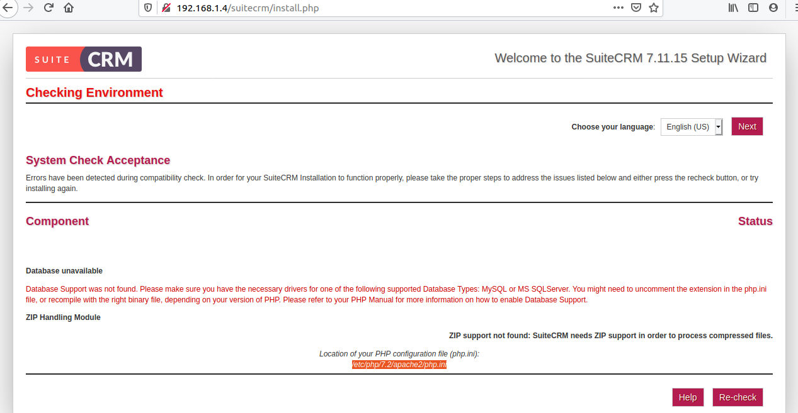
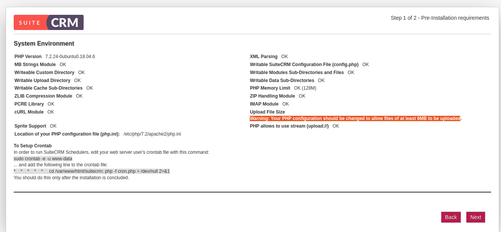
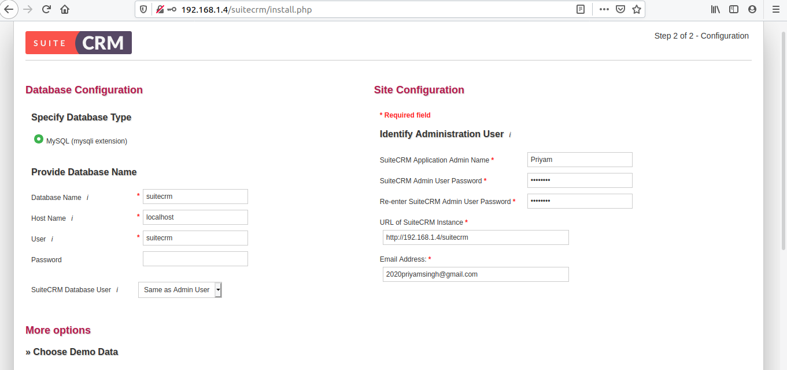

Setting up SuiteCRM
Objective
This section aims to deploy SuiteCRM on a server that is the second VM, to perform the task and solve the 5th point of the problem statement under Task 1.
SuiteCRM
The application that I chose is SuiteCRM. It is a Customer Relationship Management tool which is the open-source forked version of SugarCRM. SuiteCRM adds a few additional features to its fork and is free to use. I chose the application because it is easy to download and deployed faster and it is also an application that is used in the real-world and is not just a dummy application.
I checked out the requirements for installing SuiteCRM and made a workflow on how to carry on further tasks. SuiteCRM is written in PHP and I had to install dependencies on the production VM manually.
Dependencies
- Install PHP(PHP version 5.5.9, or 7.0 and above)
- Install MySQL
- Install Apache Web Server
Install PHP on Ubuntu 18.04
Ubuntu 18.04 has PHP 7.2 in its repositories. I Installed it by running the commands below in terminal:
sudo apt-get -y install wget php php-{pear,cgi,common,curl,mbstring,gd,mysql,gettext,bcmath,imap,json,xml,fpm}
Install the required software stack for SuiteCRM. This includes the LAMP stack and some additional PHP modules.
sudo apt-get install apache2 apache2-utils libapache2-mod-php php php-common php-curl php-xml php-json php-
To confirm that the PHP version is installed.
php -v
Installing MySQL
sudo apt install mysql-server
sudo mysql_secure_installation
Building a database:
create database suitecrm;
grant all on suitecrm.* to suitecrm@localhost IDENTIFIED by "StrongPassword";
flush privileges;
quit
Installing Apache Web Server
For installing Apache server I followed this documentation. This documentation is written is easy to understand.
Step 1 — Installing Apache
sudo apt update
sudo apt install apache2
List the ufw application profiles by typing:
sudo ufw app list
A list of the application profiles:
Available applications:
Apache
Apache Full
Apache Secure
OpenSSH
There are three profiles available for Apache:
- Apache: This profile opens only port 80 (normal, unencrypted web traffic)
- Apache Full: This profile opens both port 80 (normal, unencrypted web traffic) and port 443 (TLS/SSL encrypted traffic)
- Apache Secure: This profile opens only port 443 (TLS/SSL encrypted traffic)
Now to check the open ports
sudo ufw status
Status: active
To Action From
-- ------ ----
OpenSSH ALLOW Anywhere
8080 ALLOW Anywhere
OpenSSH (v6) ALLOW Anywhere (v6)
8080 (v6) ALLOW Anywhere (v6)
To allow the Apache port.
sudo ufw allow 'Apache'
Again check the status to see the open ports.
sudo ufw status
I can see the following ports open now including Apache.
Status: active
To Action From
-- ------ ----
OpenSSH ALLOW Anywhere
8080 ALLOW Anywhere
Apache ALLOW Anywhere
OpenSSH (v6) ALLOW Anywhere (v6)
8080 (v6) ALLOW Anywhere (v6)
Apache (v6) ALLOW Anywhere (v6)
Check with the systemd init system to make sure the service is running by typing:
sudo systemctl status apache2
Once check that the Apache is active after that run on the browser
http://IP of production VM. I saw the default Ubuntu 18.04 Apache web page on a web browser which indicates it's working properly.
Cloning SuiteCRM
To clone SuiteCRM from GitHub firstly I fork the SuiteCRM and after that cloned it to my production system.
git clone https://github.com/Priyam5/SuiteCRM.git
Installing Composer
SuiteCRM packages are not built. This is because I cloned the repository instead of using the zip archive. Hence, I had to install Composer, the package manager for PHP. I followed the official documentation and performed required steps to install Composer globally. After a successful installation, I ran composer install in the project's root directory to build the dependencies for SuiteCRM.
php -r "copy('https://getcomposer.org/installer', 'composer-setup.php');"
php -r "if (hash_file('sha384', 'composer-setup.php') === '8a6138e2a05a8c28539c9f0fb361159823655d7ad2deecb371b04a83966c61223adc522b0189079e3e9e277cd72b8897') { echo 'Installer verified'; } else { echo 'Installer corrupt'; unlink('composer-setup.php'); } echo PHP_EOL;"
php composer-setup.php
php -r "unlink('composer-setup.php');"
To check composer is installed:
php composer.phar
Errors Resolved
I copied the files from SuiteCRM directory to location /var/www/html/suitecrm because to run the application SuiteCRM. When I tried running on a browser the URL, I got this error:
Composer autoloader not found. please run "composer install"
In terminal, I ran the composer install and I got the list of issues:
Your requirements could not be resolved to an installable set of packages.
Problem 1
- The requested PHP extension ext-gd * is missing from your system. Install or enable PHP's gd extension.
Problem 2
- The requested PHP extension ext-zip * is missing from your system. Install or enable PHP's zip extension.
Problem 3
- The requested PHP extension ext-imap * is missing from your system. Install or enable PHP's imap extension.
Problem 4
- Installation request for jeremykendall/php-domain-parser 4.0.3-alpha -> satisfiable by jeremykendall/php-domain-parser[4.0.3-alpha].
- jeremykendall/php-domain-parser 4.0.3-alpha requires ext-intl * -> the requested PHP extension intl is missing from your system.
Problem 5
- Installation request for lcobucci/jwt 3.3.2 -> satisfiable by lcobucci/jwt[3.3.2].
- lcobucci/jwt 3.3.2 requires ext-mbstring * -> the requested PHP extension mbstring is missing from your system.
Problem 6
- Installation request for league/uri 4.2.3 -> satisfiable by league/uri[4.2.3].
- league/uri 4.2.3 requires ext-intl * -> the requested PHP extension intl is missing from your system.
Problem 7
- Installation request for codeception/codeception 3.1.2 -> satisfiable by codeception/codeception[3.1.2].
- codeception/codeception 3.1.2 requires ext-mbstring * -> the requested PHP extension mbstring is missing from your system.
Problem 8
- Installation request for facebook/webdriver 1.7.1 -> satisfiable by facebook/webdriver[1.7.1].
- facebook/webdriver 1.7.1 requires ext-mbstring * -> the requested PHP extension mbstring is missing from your system.
Problem 9
- Installation request for phpunit/phpunit 5.7.27 -> satisfiable by phpunit/phpunit[5.7.27].
- phpunit/phpunit 5.7.27 requires ext-mbstring * -> the requested PHP extension mbstring is missing from your system.
Problem 10
- lcobucci/jwt 3.3.2 requires ext-mbstring * -> the requested PHP extension mbstring is missing from your system.
- league/oauth2-server 5.1.6 requires lcobucci/jwt ^3.1 -> satisfiable by lcobucci/jwt[3.3.2].
- Installation request for league/oauth2-server 5.1.6 -> satisfiable by league/oauth2-server[5.1.6].
In terminal, I ran the following commands to sort out the above issues and install the packages mentioned:
sudo apt install php-gd
sudo apt install zip php-imap
sudo apt install php-zip
sudo apt-get install php7.2-mbstring
sudo apt-get install php7.2-intl
I got the next error when I ran again composer install
[RuntimeException]
/var/www/html/suitecrm/vendor does not exist and could not be created.
Note: I ran the below command and added sudo so the above directory got created.
sudo php composer.phar install
Access SuiteCRM Web Interface
I entered on browser http://IP/suitecrm/install.php for accessing the SuiteCRM Web Interface the screen opens like this:

Accept the License and press Enter a new page will open.

Again there were two issues to resolve them, I
went to the location /etc/php/7.2/apache2/php.ini and entered the command
sudo nano /etc/php/7.2/apache2/php.ini
Made these changes in the php.ini file:
- upload_max_filesize = 100M
- cgi.fix_pathinfo=0
- session.save_path = "var/www/html/suitecrm/"
After this, the System Environment page opened showing, all the system environment parameters.

Click next, and then another screen opens, enter the database name, hostname, username, and password. Also, specify the Admin user details on the right side of the screen.

I forgot the MySQL password of my database so I ran this below command to reset the password.
ALTER USER 'root'@'localhost' IDENTIFIED WITH mysql_native_password BY 'password';
After filling the entries, click next and the SuiteCRM will start installing. As it completes the SuiteCRM login screen will open.